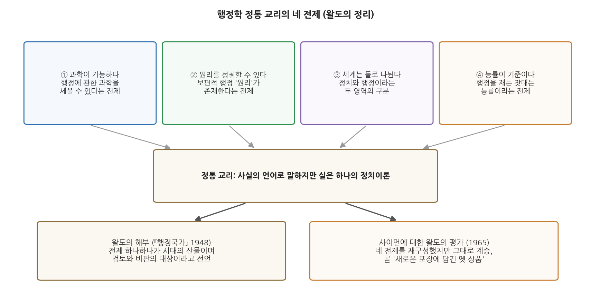
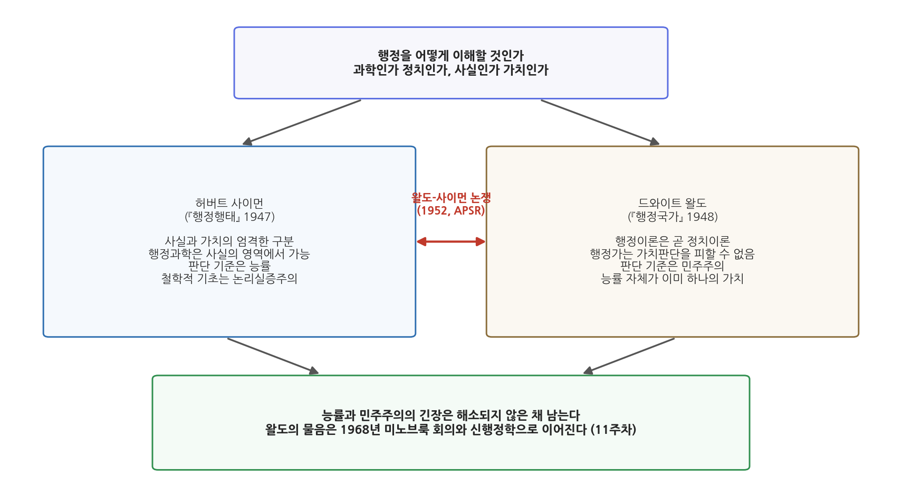

10주차 2차시. 행정국가의 재성찰 (2): 왈도의 행정국가 다시 보기 II: 민주행정을 향하여
행정학 운동의 모든 갈등과 불일치가 이 지점에서 만난다. 그 운동의 모든 미해결 이론 문제가 여기에서 수면 위로 떠오른다. (드와이트 왈도, 「행정국가 다시 보기」에서 재인용한 『행정국가』의 한 문장, "누가 지배해야 하는가"에 관하여)
이 장에서 배우는 것
지난 차시에서 우리는 왈도가 어떻게 행정학의 밑바닥에서 정치이론을 발견했는지, 그리고 능률이라는 "지하로 내려간 신앙"을 어떻게 심문대에 올렸는지 보았다. 이번 차시는 그 심문의 본론이다. 1965년 에세이 「행정국가 다시 보기」의 후반부에서 왈도는 세 개의 표적을 차례로 겨눈다. 첫째, 행정을 기업처럼 보는 눈. 미국의 조직 연구는 압도적으로 기업의 돈으로, 기업을 대상으로 수행되었고, 그 결과 조직이론은 세상의 모든 조직을 기업조직처럼 보게 되었다는 것이다. 둘째, 정통 교리 그 자체. 과학이 가능하고, 원리가 존재하며, 정치와 행정은 나뉘고, 능률이 기준이라는 네 개의 전제다. 셋째, 가장 뜻밖의 표적으로, 그 정통을 함께 무너뜨린 동지 허버트 사이먼. 왈도가 보기에 사이먼의 새 과학은 "새로운 포장에 담긴 옛 상품"이었다.
이 세 겹의 비판이 만나는 자리에 왈도의 평생의 질문이 놓여 있다. 민주주의 국가의 행정은 어떤 기준으로 판단되어야 하는가. 능률인가, 민주주의인가. 이 장에서 구체적으로 다음을 배운다.
- 왈도의 기업 모형 비판: 조직이론은 왜 세상을 기업처럼 보게 되었는가
- 정통 교리의 해부: 원리는 격언이 되었지만 "목욕물과 함께 아기까지" 버린 것은 아닌가
- 능률 비판의 완성: 목표 전치와 도구의 중립성 문제
- 왈도-사이먼 논쟁의 구도와 민주행정론의 의미
- 미노브룩 회의와 신행정학으로 이어지는 길 (11주차 예고)
이 장은 하나의 질문을 따라간다. "능률이 행정의 최고 기준이 아니라면, 민주주의 국가의 행정은 무엇으로 판단되어야 하는가?"
2.1 기업 모형 비판을 읽는다 (조직이론의 기울어진 시야) → 2.2 정통 교리의 해부를 읽는다 (원리·능률·도구의 중립성) → 2.3 민주주의와 행정의 화해를 모색한다 (왈도-사이먼 논쟁과 민주행정론) → 2.4 신행정학의 예고와 현대적 함의를 정리한다.
2.1 기업 모형 비판: 행정을 기업처럼 보는 눈
20 대 1의 세계
지난 차시에서 본 것처럼, 왈도는 『행정국가』 1부에서 "우리의 기업문명"을 행정학의 물질적 배경 가운데 하나로 꼽았다. 미국은 기업의 나라였고, 행정학은 기업 경영의 성공담을 곁눈질하며 자랐다. 6주차의 테일러가 공장에서 발견한 "유일 최선의 방법"이 행정 개혁의 표어가 된 것이 대표적이다. 1965년의 왈도는 이 항목에 가장 신랄한 업데이트 메모를 단다.
"'우리의 기업문명'의 영향도 숙고하여 고쳐 써야 한다. 영향의 성격은 바뀌었지만 결코 줄지 않았다. 얼마 전 한 친구에게 새 책의 제목을 무엇으로 할 것이냐고 물었더니, 그는 '경영대 사람들에게 먹힐 제목을 찾고 있다. 큰 시장이 거기 있으니까'라고 답했다. 그가 옳다. 대략 셈해 보아도 학교 수와 학생 수에서 우리는 20 대 1로 밀린다. 그 영향은 우리에게 크고도 미묘하다. 예를 들어 조직 연구 자금의 대부분이 기업에서 나오고 기업형 조직을 대상으로 연구가 수행되어 왔다면, 그 결과로 조직이론이 세상을 마치 모든 조직이 기업조직인 것처럼 보게 만들지 않겠는가? 질문의 형태로 말했지만, 내게 이것은 사실이다. 최근에는 연구 자금이 연방정부에서도 상당히 흘러들기 시작했다. 그 결과 병원과 교도소와 정신시설에 대한 연구가 이루어졌고, 이제는 40층 빌딩이 아니라 교도소장의 집무실에서 조직 세계를 내려다볼 수 있는 대안적 시야가 생겼다."
무슨 말인가. 행정학과 경영학의 체급 차이는 20 대 1이다. 그런데 문제는 규모가 아니라 시야다. 조직에 관한 지식이 주로 기업의 돈으로, 기업을 관찰해서 만들어진다면, 그 지식은 세상의 모든 조직을 기업의 모습으로 그리게 된다. 시청도, 학교도, 군대도 "고객"과 "성과"와 "경영"의 언어로 번역된다. 왈도가 반긴 것은 교도소와 병원 연구가 열어 준 "대안적 시야"다. 40층 사옥에서 내려다본 조직과 교도소장의 집무실에서 내려다본 조직은 다르게 보인다. 조직 일반의 이론이라 주장되는 것이 실은 특정한 조직의 초상일 수 있다는 것이다.
왜 중요한가. 이것은 지식사회학적 비판이다. 이론이 틀렸다고 논박하는 대신, 그 이론이 어떤 자리에 서서 만들어졌는지를 묻는다. 지난 차시에 본 "정치이론의 렌즈"가 여기서도 작동한다. 조직이론은 중립적 과학을 자처하지만, 연구비의 출처와 관찰 대상의 선택에는 이미 기울기가 있다. 공공행정을 기업의 축소판으로 보는 순간, 기업에는 없는 것들, 곧 헌법, 시민, 권리, 공익 심의가 이론의 시야에서 사라진다.
같은 맥락에서 왈도는 에세이 후반부의 "의제" 목록에서 계약을 통한 정부(government-by-contract)의 팽창을 첫손에 꼽는다. 정부가 기업·비영리조직·주립대학과의 계약으로 일하는 방식은 "기업처럼 보이며, 미국의 자유기업 이데올로기에 비교적 눈에 띄지 않게 맞아떨어진다"는 것이다. 그는 묻는다. 국방 연구를 수행하는 주립대학에서 연방과 주의 경계를 누가 그을 수 있는가. 정부 계약으로 살아가는 거대 군수기업은 어느 지점부터 사실상 공공기관으로 다루어야 하는가. 기업과 정부의 경계가 흐려질수록, 행정을 기업 모형으로 이해하는 것의 위험은 커진다.
기업의 성패는 시장이 판정한다. 손익계산서가 있고, 고객은 떠날 수 있다. 그러나 정부의 "고객"인 시민은 국적을 쉽게 떠날 수 없고, 정부가 하는 일의 다수(치안, 국방, 재분배, 규제)는 시장 가격이 없어 손익으로 환산되지 않는다. 무엇보다 정부는 이윤이 아니라 정당성으로 존립한다. 기업 모형은 측정 가능한 것을 잘 보게 해 주는 대신, 측정되지 않는 것(권리 보장, 절차의 공정, 취약계층에 대한 책임)을 시야 밖으로 밀어낸다. 왈도의 비판은 훗날 신공공관리(NPM)를 둘러싼 논쟁에서 거의 같은 형태로 반복된다.
2.2 정통 교리의 해부
원리의 몰락, 그리고 "목욕물과 아기"
9주차에서 우리는 사이먼의 「행정의 격언들」을 읽었다. 통솔범위를 좁히라는 원리와 계층 수를 줄이라는 원리가 서로 충돌하듯, 행정학의 "원리"들은 언제나 짝을 이루어 반대 방향을 가리키는 격언에 불과하다는 폭격이었다. 왈도는 같은 시기에 같은 결론에 도달한 "젊은 저자들" 가운데 한 사람이 바로 자신이었다고 회고한다.
"전쟁 기간 동안 수백 명의 교사와 저술가와 연구자들이 행정의 안팎에서 일했고, 조금 보태어 말하면 몇 해 사이에 수십 년 치의 경험을 응축했다. 그 경험을 점검하고 분석하던 바로 그때, '전통'은 혹독한 검토를 받았다. 젊은 저자 몇 사람이 서로 독립적으로, 그러나 대체로 평행한 길을 걸으며, '원리(principles)'란 사실 '격언(proverbs)'에 지나지 않는다는 결론에 이르렀다. (…) 그런데 반작용이 너무 완벽해서, 나는 곧 우리가 목욕물과 함께 아기까지 쏟아 버린 것은 아닌가 생각하게 되었다. 두 세대에 걸친 연구에서 정말 가치 있는 것을 우리는 아무것도 배우지 못했단 말인가? 사이먼은 우리가 아무것도 배우지 못했으며 새로운 기초 위에 처음부터 다시 지어야 한다는 식으로 말하는 듯했다."
무슨 말인가. 1940년대 후반, 로버트 달과 사이먼과 왈도의 『행정국가』가 각자의 방향에서 정통 교리를 공격했고, "원리"는 철저히 신뢰를 잃었다. 그런데 왈도는 파괴가 끝난 자리에서 곧바로 불안해진다. 귤릭(8주차)과 화이트(7주차)로 대표되는 두 세대의 연구가 정말 전부 쓰레기였는가. 그는 아니라고 답한다. 낡은 원리를 보편 과학처럼 가르치는 것도 잘못이지만, 그 안에 쌓인 경험적 지혜와 분별(prudence)까지 내다 버리는 것도 잘못이라는 것이다. 왜 중요한가. 이 대목은 왈도가 단순한 파괴자가 아님을 보여 준다. 그는 정통을 해부하되, 해부의 목적은 폐기가 아니라 더 정직한 토대 위의 재건이다. 특정한 경험에서 나온 일반화를 특정한 목표와 조건에 연계해 겸손하게 복권시키는 일, 왈도는 그것을 "존중할 만하고 매우 필요한 작업"이라 불렀다.

그림 10-3은 왈도가 정리한 정통 교리의 네 전제를 보여 준다. 행정에 관한 과학이 가능하다는 전제, 보편적 원리를 성취할 수 있다는 전제, 세계가 정치와 행정의 두 영역으로 나뉜다는 전제, 능률이 판단 기준이라는 전제다. 네 전제는 사실의 언어로 말해졌지만 왈도가 보기에는 하나의 정치이론을 이루며, 아래 두 상자가 보여 주듯 이 정리는 1948년의 정통 비판에서 1965년의 사이먼 평가로까지 이어지는 잣대가 된다. 이 그림에서 알 수 있는 것은, 뒤에서 볼 왈도-사이먼 논쟁이 우발적 감정 싸움이 아니라 이 네 전제를 둘러싼 구조적 대립이라는 점이다.
능률 비판의 완성: 목표 전치
지난 차시에서 예고한 능률 비판의 본론이 여기서 나온다. 흥미롭게도 이 대목은 남에 대한 비판이 아니라 자기 수정의 형식을 띤다. 1948년의 왈도는 능률이 그 자체로는 가치일 수 없고 반드시 "무엇을 위한" 능률인지를 물어야 한다고 주장했다. 1965년의 왈도는 그 주장이 절반만 옳았다고 고백한다.
"능률이 그 자체로 가치일 수는 없고, 다만 다른 가치에 대한 예우나 참조를 통해서만 가치가 된다는 나의 주장은 과녁을 지나쳤다고 본다. 분석적이고 이성적인 수준에서는 본질적으로 옳았지만, 심리적이고 사회적인 현상을 놓쳤다. 개인 수준에서 보면, '목표 전치(goal displacement)'에 의해 수단적 가치로 출발한 것이 가치 그 자체가 되어 버릴 수 있음이 이제는 분명하다. 사회 수준에서도 마찬가지다. 어떤 사회가 능률을 그 수단적 가치 때문에 열심히 가꾸다 보면, 시간이 흐르면서 중요한 방식으로 그것은 가치 그 자체가 될 수 있다. 위생 때문에 먼저 가치 있던 청결이 마침내 '경건' 바로 옆자리에 놓이게 되는 것처럼 말이다."
무슨 말인가. 논리적으로는 능률이 수단이다. 그러나 심리와 사회의 실제에서는 수단이 목적의 자리를 차지한다. 9주차에서 머튼이 보여 준 목표 대치, 곧 규칙 준수라는 수단이 조직의 목적 자체가 되어 버리는 현상과 정확히 같은 구조다. 청결은 원래 위생을 위한 수단이었지만, 어느새 "청결은 경건 다음가는 미덕"이라는 격언이 생길 만큼 그 자체로 숭배된다. 능률도 그렇게 되었다. 왜 중요한가. 이 자기 수정으로 능률 비판은 오히려 강해진다. 능률이 사실상 목적이 되어 버렸다면, "능률은 어차피 수단일 뿐"이라는 안심은 통하지 않는다. 능률은 실제로 사회가 숭배하는 가치가 되었으므로, 다른 가치들(민주주의, 형평, 권리)과 같은 심의대 위에서 경쟁해야 한다. 아울러 왈도는 능률이 "정신적 현상일 뿐 객관적 현상은 아니다"라던 옛 주장도 지나쳤다고 거두어들인다. 능률과 비능률은 객관적으로 실재한다. 문제는 능률의 실재가 아니라, 능률에게 자동으로 왕좌를 내주는 사고다.
도구는 중립적인가: 타자기의 철학
능률 논의의 끝에서 왈도는 자신이 "여전히 곱씹는 문제"라며 한 가지 사고실험을 다시 꺼낸다. 『행정국가』에서 도구의 중립성을 설명하려고 들었던 타자기의 예다.
"마지막 절의 문제, 곧 내가 여전히 곱씹는 문제는 '도구의 중립성'이다. 예로 들었던 타자기가 이 문제를 잘 보여 준다. 지금 보아도, 그렇게 수동적이고 수많은 목적에 맞출 수 있는 도구가 유사한 조건에서 유사한 능률을 낸다는 것은 사실인 듯하다. 그러나 이것은 서구적, 곧 산업적이고 관료제적인 준거틀을 전제하는 것이 아닌가? 오지의 아룬타족에게 타자기의 '능률'은 무엇인가? (…) 타자기는 암묵적으로 문화를, 삶의 관점과 양식을 함께 싣고 오는 것이 아닌가? 철과 고무와 플라스틱과 화학과 함께. 타자수와 우편제도와 관료와 타자기 유통업자와 수리공과 함께. 게다가 기계의 키에는 서로 다른 상징이 새겨져 있어 어떤 언어는 쓸 수 있지만 다른 언어는 쓰지 못한다. 그리고 언어는 고유한 가치 체계를 운반한다."
무슨 말인가. 타자기는 가장 무해해 보이는 도구다. 어떤 내용이든 타이핑할 수 있으니 목적에 중립적인 것 같다. 그러나 타자기 한 대가 어떤 사회에 들어가려면 그것을 만들 산업, 다룰 타자수, 오갈 우편제도, 읽을 관료제가 함께 들어가야 한다. 자판에 새겨진 문자는 특정 언어를 강제하고, 언어는 가치 체계를 실어 나른다. 도구는 홀로 오지 않고 문명을 데리고 온다. 왈도는 이 성찰을 당시 미국이 벌이던 기술원조와 비교행정 사업에 연결한다. 미국의 행정 기술을 다른 문화에 이식할 때, 기술만 옮겨지는 것이 아니라 능률이라는 가치를 포함한 문화의 중요한 부분이 함께 옮겨진다. 최선의 의도에도 불구하고 그 결과는 종종 비능률적이고 순진했으며, 때로 파괴적이기까지 했다는 것이 왈도의 냉정한 평가다.
왜 중요한가. 도구의 중립성 문제는 능률 이데올로기 비판의 가장 깊은 층이다. "행정 기법은 가치중립적 도구이므로 어디에나 적용할 수 있다"는 믿음이야말로 정통 교리가 스스로를 과학이라 자처할 수 있었던 마지막 근거였기 때문이다. 도구가 문화를 싣고 온다면, 행정 기법의 선택은 언제나 가치의 선택이다.
왈도를 "능률 반대론자"로 요약하면 오독이다. 그는 능률과 비능률이 객관적으로 실재함을 인정했고, 능률 개념 없이는 행정의 많은 일을 이해할 수 없다고 했으며, 원리 비판이 지나쳐 "목욕물과 함께 아기까지" 버리는 것을 경계했다. 그의 표적은 능률 자체가 아니라, 능률을 검증 면제된 최고 기준으로 승격시키고 그 정치적 성격을 감추는 사고방식이다. 이 구별을 놓치면 다음 절의 왈도-사이먼 논쟁도 "과학 대 반(反)과학"의 유치한 대결로 잘못 읽게 된다.
2.3 민주주의와 행정의 화해: 민주행정을 향하여
누가 지배해야 하는가
정통 교리를 해부한 자리에 왈도가 다시 세우려는 기둥은 무엇인가. 그 실마리는 『행정국가』에서 그가 지금도 가장 아끼는 문장에 있다.
"'누가 지배해야 하는가(Who Should Rule?)'의 장에서는, 지금 보아도 여전히 적실한 문장 하나에 눈길이 간다. '행정학 운동의 모든 갈등과 불일치가 이 지점에서 만난다. 그 운동의 모든 미해결 이론 문제가 여기에서 수면 위로 떠오른다.' (…) 그렇다면 우리는 지금 어디에 있는가? 나는 의견의 분열과 충돌 상태 한복판에 여전히 있다고 본다. 정치와 행정의 이원론에 관해 20여 년간 합의가 있었다고 기록은 말하지만, 사태의 본성상 그만한 합의에 다시 도달해야 할 이유는 아마 없을 것이다. 어쩌면 그래서는 안 될지도 모른다."
무슨 말인가. 행정학의 온갖 기술적 논쟁, 곧 실적제와 교육과 원리와 예산을 둘러싼 다툼은 결국 한 질문의 변주다. 누가 다스려야 하는가. 선출된 정치인인가, 훈련된 전문 관료인가, 그 사이의 어떤 배합인가. 5주차에서 본 윌슨-굿나우의 이원론은 이 질문에 "정치는 정치인이, 행정은 관료가"라는 깔끔한 답을 주었고 그 위에 20년의 합의가 세워졌다. 그러나 8주차의 해링에서 이미 금이 갔던 그 합의에 대해, 왈도는 더 놀라운 말을 한다. 그런 합의는 다시 오지 않을 것이며, 어쩌면 와서는 안 된다는 것이다. 왜 중요한가. 누가 다스려야 하는가는 민주주의 사회에서 최종적으로 닫을 수 없는 질문이다. 그것을 닫았다고 선언하는 순간, 정치적 선택이 기술적 필연으로 위장된다. 행정이론이 정치이론이라는 왈도의 명제는 여기서 실천적 의미를 얻는다. 행정의 근본 문제는 풀어서 없애는 문제가 아니라, 세대마다 다시 심의해야 하는 문제다.
왈도-사이먼 논쟁: 과학인가 정치인가
이 질문 앞에서 왈도와 정면으로 갈라선 사람이 사이먼이다. 두 사람은 묘한 관계였다. 1940년대 후반에 나란히 정통 교리를 폭격한 동지였으나, 폐허 위에 무엇을 지을 것인가에서 정반대의 답을 내놓았다. 사이먼의 답은 논리실증주의에 기초한 행정과학이었다. 사실과 가치를 엄격히 구분하고, 과학은 사실의 영역에서 의사결정을 연구하며, 판단 기준은 능률이라는 것이다(9주차). 왈도의 답은 민주행정이었다. 행정가는 가치판단을 피할 수 없고, 행정이론은 정치이론이며, 민주주의 국가의 행정은 민주주의라는 가치에 비추어 판단되어야 한다는 것이다. 두 입장은 1952년 미국정치학회지(APSR) 지면에서 정면으로 충돌했다. 왈도가 민주행정 이론의 발전을 주장하는 논문을 싣자 사이먼이 신랄한 반박문으로 응수한 이 교환은 "왈도-사이먼 논쟁"으로 불리며, 행정학이 과학인가 정치철학인가라는 학문 정체성 논쟁의 원형이 되었다. 1965년의 에세이에서 왈도는 이 오랜 맞수를 뜻밖의 방식으로 평가한다.
"젊은 저자들 가운데 한 사람이던 허버트 사이먼은 과거에 대한 비판만이 아니라 미래를 위한 밀도 있고 정연한 프로그램을 내놓았다. 그런데 왜 그것이 행정학에서는 받아들여지지 않았는가? (…) 분명 더 많은 이들, 나보다 경험 많고 지성적인 이들의 다수는 이해했으나 설득되지 않았다. 아마 그 분석과 프로그램이 그들에게 진실하게 들리지 않았을 것이다. 그들이 겪어 온 행정의 세계가 사이먼의 분석 속에는 존재하지 않았던 것이다. (…) 사이먼의 정식은 역설적이게도 새롭고 심지어 급진적이면서도, 몇몇 주요한 윤곽에서는 매우 '전통적'이었다. 과학이 가능하다는 전제, 원리를 성취할 수 있다는 전제, 우리의 세계가 두 영역으로 나뉠 수 있다는 전제, 능률이 적절한 기준이라는 전제가 그것이다. 물론 사이먼은 이 생각들을 상당히 재구성했다. 하지만 과거의 오류와 쓸모없는 장비를 벗어던지기를 열망하던 세대에게, 그는 어쩌면 새로운 포장에 담긴 옛 상품을 내미는 것처럼 보였을 수 있다. 예컨대 정치와 행정의 분리가 중대한 오류라고 확신하게 된 세대는, 사실과 가치의 이분법을 지겨운 주제의 변주로 보았을 수 있다."
무슨 말인가. 왈도의 평가는 두 겹이다. 한편으로 그는 사이먼의 프로그램이 "밀도 있고 정연했다"고 인정하고, 그것을 이해하지 못한 이들이 아니라 이해하고도 설득되지 않은 이들이 다수였다고 공정하게 기록한다. 다른 한편으로 그는 결정적 반전을 놓는다. 그림 10-3의 네 전제를 다시 보라. 과학, 원리, 두 영역의 구분, 능률. 사이먼은 이 네 전제를 세련되게 재구성했을 뿐 하나도 버리지 않았다. 정치-행정 이원론을 장례 치른 세대의 눈에, 사실-가치 이분법은 같은 곡의 변주로 들렸다. 급진적 파괴자 사이먼이 실은 정통 교리의 적자(嫡子)라는 것, 이것이 "새로운 포장에 담긴 옛 상품"이라는 유명한 구절의 뜻이다.
왜 중요한가. 이 평가는 왈도-사이먼 논쟁의 구도를 선명하게 만든다. 논쟁의 표면은 사실-가치 구분의 타당성이지만, 심층은 행정학의 자기 정체성이다. 사이먼의 길을 따르면 행정학은 가치를 괄호에 넣은 조직과학이 되고, 왈도의 길을 따르면 행정학은 정치철학과 분리될 수 없는 실천 학문이 된다. 어느 쪽이 이겼는가를 묻는다면, 역사는 무승부에 가깝다. 사이먼의 프로그램은 행정학보다 경영학에서 열광적으로 수용되었다고 왈도는 기록하는데, 이 사실 자체가 왈도의 논지, 곧 공공행정의 세계는 기업의 세계와 다르다는 주장을 뒷받침하는 증거이기도 하다.

그림 10-4는 이 논쟁을 한 장으로 정리한다. "행정을 어떻게 이해할 것인가"라는 공통 질문에서 출발해, 왼쪽의 사이먼(사실-가치 구분, 행정과학, 능률, 논리실증주의)과 오른쪽의 왈도(행정이론은 정치이론, 가치판단의 불가피성, 민주주의, 능률도 하나의 가치)가 갈라지고, 두 입장 사이의 붉은 화살표가 1952년 APSR 논쟁을 표시한다. 아래 상자가 보여 주듯 이 긴장은 승패로 끝나지 않고 1968년 미노브룩 회의와 신행정학으로 흘러간다. 이 그림에서 알 수 있는 것은, 능률과 민주주의의 긴장이 행정학사의 한 사건이 아니라 행정학을 계속 움직여 온 동력이라는 점이다.
민주행정(democratic administration)은 행정을 민주주의의 바깥에 있는 기술적 도구가 아니라 민주주의를 실현하는 장(場)의 하나로 보고, 행정의 조직과 운영 자체를 민주주의의 가치(참여, 책임, 심의, 평등)에 비추어 설계하고 판단하려는 관점이다. 왈도는 행정가를 단순한 정책 집행자가 아니라 민주주의와 공공의 맥락 속에서 가치판단을 내리는 책임 있는 행위자로 보았다. 능률이 "어떻게 잘할 것인가"만 묻는다면, 민주행정은 "무엇을, 누구를 위해, 어떤 절차로 할 것인가"를 함께 묻는다.
2.4 신행정학의 예고와 현대적 함의
새로운 종합은 없다, 그래도 좋다
에세이의 마지막 부분에서 왈도는 전후 행정학의 풍경을 조감한다. 정통이 무너진 뒤 20년, 새로운 정통은 나타났는가. 그의 답은 담담하다. "행정학은 이 데이터 묶음, 저 개념 집합, 또 다른 분과의 관점을 받아들이는 방식으로 성장해 왔다. 우리는 정체되어 있기는커녕 매우 역동적이다. 그러나 새로운 종합은 없다." 그리고 그는 뜻밖에도 그것이 나쁘지 않을 수 있다고 덧붙인다. 새로운 종합이 성취된다 해도 그것은 또 하나의 정통이 될 터이니 바람직하지 않을 수 있다는 것이다. 행정학에 어울리는 모델은 하나의 통일 이론을 가진 물리학이 아니라, 수십 개 분야의 지식을 빌려 쓰면서 그 지식들이 서로 완전히 화해되지 않는 채로 굴러가는 의학이나 법학 같은 전문직일지 모른다. 학문(discipline)에서 전문직(profession)으로. 이 제안은 오늘날 행정학의 자기이해에 깊이 박혀 있다.
같은 맥락에서 왈도는 미래의 행정학이 마주할 "환경적 도전"의 의제 목록을 작성한다. 계약을 통한 정부, 군의 성장, 과학혁명, 컴퓨터·오퍼레이션스 리서치·시뮬레이션의 "혼성 덩어리", 그리고 도시-광역 혁명. 1965년의 이 목록이 이후 반세기 행정학의 연구 지도와 얼마나 겹치는지를 확인해 보면, 매켄지가 풍자 삼아 말한 "앞으로 50년"이 과장이 아니었음을 알게 된다.
미노브룩으로 가는 길
이 에세이가 쓰인 1965년의 미국은 격동의 문턱에 있었다. 베트남전과 도시 폭동, 민권운동의 파고 속에서 젊은 행정학자들은 능률의 언어로는 시대의 질문에 답할 수 없다고 느꼈다. 1968년, 왈도는 시러큐스 근처의 미노브룩에서 젊은 학자들을 모아 회의를 열었고, 이 회의에서 사회적 형평성과 참여와 변화를 앞세우는 신행정학(New Public Administration)이 태동했다. 행정학이 조직 관리의 기술학에 머물지 않고 사회 변혁과 민주적 책임을 고민하는 학문으로 넓어지는 이 전환에 왈도의 사상이 지적 토대를 놓았다는 평가가 있다. "누가 지배해야 하는가"라는 질문, 능률도 하나의 가치일 뿐이라는 해부, 행정가는 가치판단의 책임을 피할 수 없다는 명제가 없었다면, "누구를 위한 행정인가"라는 신행정학의 질문은 나올 자리가 없었을 것이다. 신행정학의 본론은 11주차 2차시(프레드릭슨)에서 읽는다. 그 직전인 11주차 1차시의 린드블롬은, 합리적 총체적 분석이라는 이상이 실제 정책 과정에서 어떻게 무너지는지를 보여 줌으로써 정통 비판의 또 다른 갈래를 잇는다.
현대 행정에의 함의
왈도의 후반부 논의는 오늘의 한국 행정에 적어도 세 가지 질문을 남긴다.
첫째, 기업 모형의 문제다. 공공기관 경영평가, 성과연봉제, 고객만족도 조사처럼 한국 행정의 많은 제도는 기업의 언어로 설계되어 있다. 이 제도들이 유용한 국면이 분명히 있다. 왈도가 요구하는 것은 폐기가 아니라 자각이다. 시민을 고객이라 부르는 순간 무엇이 보이고 무엇이 안 보이게 되는가. 교도소장의 집무실에서 보면, 곧 수익도 고객도 없는 행정의 자리에서 보면 같은 제도가 어떻게 보이는가.
둘째, 도구의 중립성 문제는 디지털 행정 시대에 더 무거워졌다. 알고리즘 기반 복지 대상자 선별, 인공지능 민원 응대, 데이터 기반 치안 예측 같은 도구들은 타자기보다 훨씬 많은 것을 싣고 온다. 어떤 데이터를 쓸지, 무엇을 최적화할지, 오류의 비용을 누가 질지가 도구 안에 미리 새겨져 있다. "이것은 그저 도구"라는 말이 들리는 곳이라면 어디든, 왈도의 타자기를 떠올릴 필요가 있다.
셋째, 능률과 민주주의의 긴장은 관리의 대상이지 해소의 대상이 아니다. 신속한 재난 대응과 적법절차, 예산 절감과 취약계층 보호, 규제 완화와 안전은 늘 맞당긴다. 왈도의 가르침은 이 긴장에서 어느 한쪽의 영구 승리를 선언하지 말라는 것이다. 민주주의 국가의 행정가는 두 가치를 사안마다 다시 저울질하는 책임, 곧 정치적이고 도덕적인 책임을 진다. 그 책임을 기술의 이름으로 반납하지 않는 것, 왈도가 말한 민주행정의 출발점이 거기다.
요약
「행정국가 다시 보기」(1965)의 후반부에서 왈도는 세 겹의 비판을 전개한다. 첫째, 기업 모형 비판이다. 조직 연구가 기업의 자금으로 기업을 대상으로 수행되면서 조직이론은 세상의 모든 조직을 기업처럼 보게 되었고, 계약을 통한 정부의 팽창은 그 위험을 키운다. 둘째, 정통 교리의 해부다. "원리는 격언"이라는 폭격에 동참했던 왈도는 그러나 반작용이 지나쳐 "목욕물과 함께 아기까지" 버리는 것을 경계했고, 능률 비판을 자기 수정의 형식으로 완성했다. 목표 전치에 의해 수단인 능률이 사실상의 가치가 되었으며(머튼의 목표 대치와 같은 구조), 타자기의 사고실험이 보여 주듯 도구는 문화와 가치를 싣고 오므로 행정 기법의 선택은 언제나 가치의 선택이다. 셋째, 사이먼 평가다. 정통을 함께 무너뜨린 사이먼의 새 과학은 실은 정통의 네 전제(과학, 원리, 두 영역, 능률)를 재포장한 "새로운 포장에 담긴 옛 상품"이었고, 이 대립은 1952년 APSR의 왈도-사이먼 논쟁으로 표면화되었다. 왈도의 대안은 민주행정이다. "누가 지배해야 하는가"는 민주주의 사회에서 최종적으로 닫을 수 없는 질문이며, 행정가는 가치판단의 책임을 피할 수 없다. 이 사상은 1968년 미노브룩 회의와 신행정학(11주차)의 지적 토대가 되었다.
토론·복습 문제
10-5. (원전 구절 해석형) 왈도는 사이먼의 프로그램을 "새로운 포장에 담긴 옛 상품"이라고 평가했다. 여기서 "옛 상품"에 해당하는 네 가지 전제가 무엇인지 밝히고, 9주차에서 읽은 사이먼의 「행정의 격언들」 및 사실-가치 구분과 연결하여 이 평가의 타당성을 검토해 보라.
10-6. (서술형, 기말 대비) 왈도-사이먼 논쟁의 쟁점을 사실-가치 구분과 능률 기준을 중심으로 설명하고, "행정학은 과학이어야 하는가, 정치철학이어야 하는가"라는 물음에 대한 자신의 입장을 두 사람의 논거를 모두 검토한 위에서 논의하시오.
10-7. (적용) 왈도의 타자기 사고실험을 오늘날의 행정 도구 하나(예: 알고리즘 기반 복지 대상자 선별, AI 민원 챗봇, 성과평가 시스템)로 바꾸어 다시 수행해 보라. 그 도구가 "함께 싣고 오는" 문화, 전제, 가치는 무엇이며, 그 도구의 "능률"은 어떤 준거틀을 전제하는가.
10-8. (비교·토론) 9주차의 머튼은 "목표 대치"를, 왈도는 "목표 전치에 의해 수단이 가치가 되는" 현상을 말했다. 두 논의의 공통 구조를 정리하고, 능률이 목적의 자리를 차지한 사례를 한국 행정에서 하나 찾아, 그것이 왜 문제가 되는지 혹은 문제가 되지 않는지 토론해 보라.